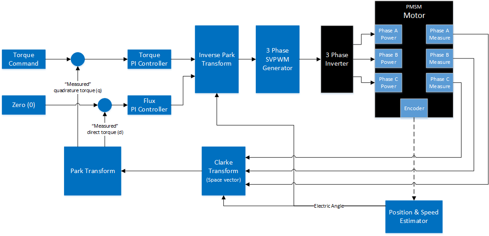
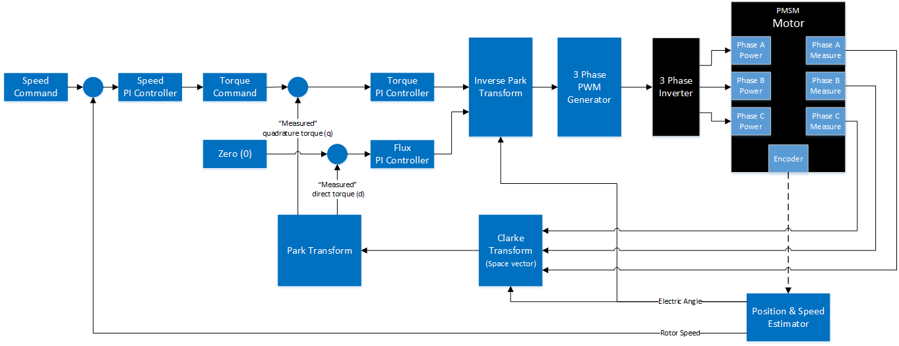
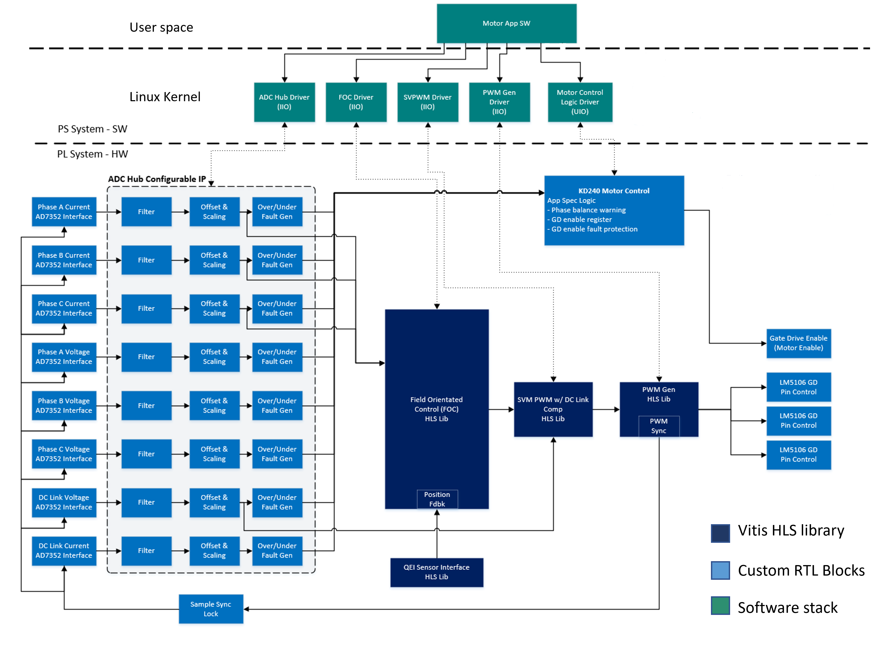

Kria™ KD240 Drives Starter Kit
|
Introduction |
Introduction¶
The KD240 Field Oriented Control (FOC) Motor Control Application is intended to capture general inverter and motor control examples using AMD-Xilinx standard IP/libraries. The IPs, libraries, and drivers serve as a design example demonstrating the K24 SOMs capabilities in implementing applications that require precise control of the motor’s speed and torque while minimizing energy losses and reducing system noise. The IPs, libraries and drivers created are to be general in the sense they do not assume specific board level hardware for implementing the necessary cyber-physical boundaries around a given application.
An overview of the motor field orientated control library functionality is summarized in the following three types of FOC based motor control that are to be implemented for supporting the KD240. Each focuses on either controlling the torque or speed of the motor.
Torque Control - Default FOC control is focused on maximizing the torque output of a motor by optimizing the quadrature (q) vector which represents the useful motor torque and minimizing the direct (d) vector component. In this mode of operation the goal is to keep motor torque constant by adjusting motor speed.
Speed Control - Speed control is implemented through an additional PI control that adjusts the motor torque to the motor to maintain a constant speed.
Field Weakening Control - The field weakening control method trades off optimal torque in order to increase the speed of the motor. This is accomplished by adjusting the relationship of the q-vector and d-vector in FOC.
Design and Implementation¶
The following provide more detailed definitions around the defined motor control modes of operation.
Torque Control¶
Torque control implements a closed loop control focused on maintaining a specified torque value. In this mode of operation the q-vector provides the useful torque output of the motor and the d-vector the force that is parallel to the rotor. The d-vector represents non-useful force and thus any non-zero value is considered an error.

Speed Control¶
Constant speed control is achieved through a PI controller that adjusts the motor torque to maintain a specified motor speed.

Sensored FOC Application¶
The block diagram below shows the implementation of the Sensored FOC application.
Motor Voltage and Current Feedbacks are provided by the ADC-HUB. QEI Encoder provides the measured RPM from the BLDC motor as a feedback to the FOC control block. The generic PWM block is to provide a series of commands for each switch of a three leg inverter, with discrete on/off commands for each device. The Gate drive Pin control (GD Pin Control) & enable block is intended to implement the translation from PWM functionality provided by the SVM PWM HLS IP to the KD240 specific gate drive circuit implementation. The gate drive enable signal is used to enable the power stage. This signal is shared across all three power bridge phases. The KD240 Motor Control block provides motor fault generation and system fault protection logic, which is used to check for gross failures in the system such as shorted motor winding or failed phase leg.
As seen by the block diagram in the kernel space, All the soft IPs are supported by kernel drivers using the industrial I/O framework. The drivers provide a number of features that make the HW easier to configure and use these devices. It has support for buffers, common sysfs interface and integration with libiio framework in the user-space. A Motor Control application library is integrated with the device drivers to seamlessly operate different modes set by the user. User can control various set points and gain parameters using the Dashboard GUI, as well as observe live plots of important metrics such as speed, feedback current/voltages and torque. Instructions to test demo application is presented in the next section.

Next Steps¶
Copyright© 2023 Advanced Micro Devices, Inc